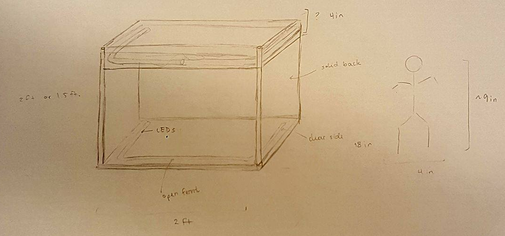
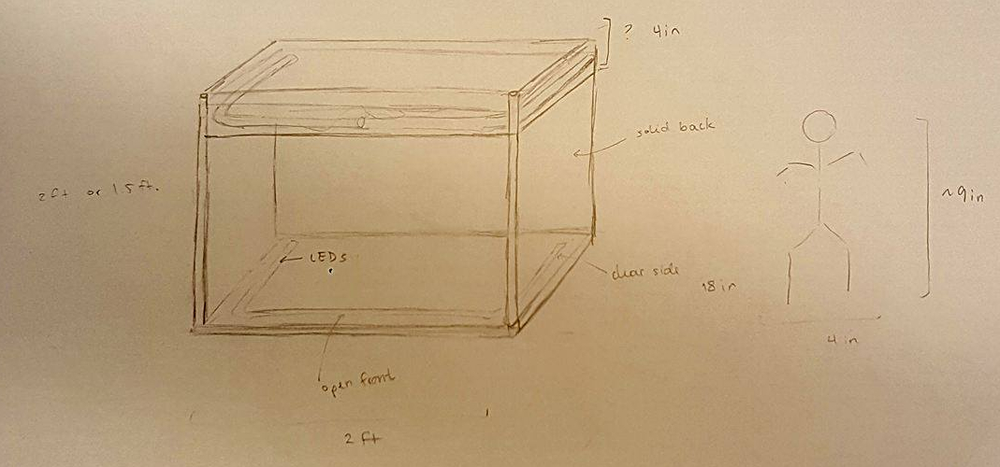

♦ ♦ the real boiz ♦ ♦
just a principles of engineering team making automated marionettes.
♦ what we've been up to ♦
"As soon as he gets home, Geppetto fashions the Marionette and calls it Pinocchio." — The Adventures of Pinocchio
♦ sprint 1 ♦
During this sprint, we focused mainly on sketch models of both the marionette and the stage. We purchased a marionette from Amazon ($10.58), which we experimented with in order to build our own sketch model of a marionette. We also built a sketch model of the stage. In the way of non-sketch model work, we have begun designing the mechanism by which we will spool strings in order to move the marionette. Finally, we've started considering how we will pull back the curtains on the stage when an audience is detected.
Related images:
 
